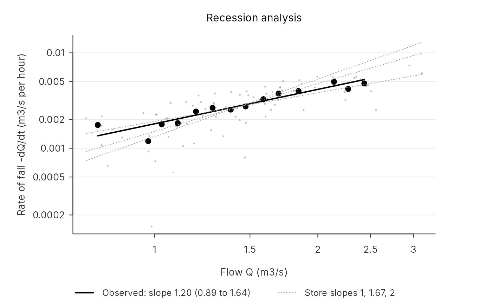

Recession analysis: which groundwater store does the flow record point to?
Source:R/recession.R
recession_analysis.RdOnce the surface stores have emptied after rain, the flow is the groundwater store
draining, and how fast it falls for a given flow depends on the store's form. Plotted on
logarithmic axes, the rate of fall -dQ/dt against the flow Q lies along a line whose
slope identifies the store (Brutsaert and Nieber, 1977; Kirchner, 2009):
Usage
recession_analysis(
flow,
rain = NULL,
dt = 1,
time = NULL,
aggregate_h = 24,
dry_h = NULL,
rain_tol = 0.1,
min_steps = 3L,
skip_steps = 1L,
months = NULL,
bins = 20L,
boot = 200L,
seed = 1L
)Arguments
- flow
Flow, m3/s, at a regular step.
- rain
Optional rain, mm per step, aligned with
flow. Without it, only falling flow selects the points.- dt
Step of
flow, hours.- time
Optional times of
flow(POSIXct), needed formonths.- aggregate_h
Hours over which flow is averaged and rain summed before the analysis; a whole number of steps.
- dry_h
Hours since rain before a step counts; by default three response times, at least
aggregate_h.- rain_tol
Largest rain, mm per aggregated step, that still counts as dry.
- min_steps
Fewest falling steps a recession run must have.
- skip_steps
Steps left out at the start of each run.
- months
Months (1 to 12) whose recessions count; all by default.
- bins
Number of flow bins.
- boot
Bootstrap resamples for the confidence interval; 0 for none.
- seed
Seed for the bootstrap; the caller's random state is restored.
Value
A list of class pdm_recession with slope, ci (2.5% and 97.5%), intercept,
power_m (the power-store exponent the slope implies; Inf at a slope of 2 or more),
stores (each store's slope and whether it lies in the interval), nearest (the store
whose slope is closest), points (run, flow, rate in m3/s per hour, and time
when given), bins, and the settings used.
Details
| Store | Outflow | Slope |
| linear | q = S / kb | 1 |
| quadratic | q = S^2 / kb | 1.5 |
| cubic | q = S^3 / kb | 1.67 |
| exponential | q = exp(a S + gamma) | 2 |
A power store q = k S^m has slope (2m - 1) / m, so a measured slope b also gives the
exponent m = 1 / (2 - b) of power_routing().
Which points count. The flow is averaged over aggregate_h hours (daily by default:
at 15-minute steps the rate of fall is mostly noise). A step counts when the flow falls,
no rain above rain_tol fell in it, and at least dry_h hours have passed since the last
rain, so that the surface stores have drained; by default three response times of the
catchment (response_time_dmca()), or aggregate_h where none can be found. Runs of
falling steps shorter than min_steps are left out, and the first skip_steps of each run.
months keeps only recessions in those months: evaporation steepens summer recessions, so
winter ones show the store more cleanly.
The fit. The points are binned by flow on a log scale, and a straight line is fitted to
the logs of the bins' mean flow and mean rate, weighted by their counts, as Kirchner (2009)
recommends; bins with fewer than three points are dropped. The confidence interval comes
from refitting on boot resamples of whole recession runs, which keeps the dependence
within a run. Every store whose slope lies inside the interval is consistent with the
record. Where several are, the record cannot choose between them, and that is the answer.
Recharge between events flattens the slope. The table holds for a store that only drains. With standard recharge, the soil store keeps feeding groundwater through every recession, and the flow falls more slowly than the store alone would let it. On made-up catchments with ten years of hourly rain, with split recharge (none between events) the fitted slopes were 0.98, 1.50, 1.63 and 1.92 for the four stores, close to the table; with standard recharge they were 0.1 to 0.9 lower, by an amount depending on the store and the recharge rate, and the stores ran together. Fitting the steepest points instead did not remove the bias. So read a store straight from the slope only where recharge stops between events.
Choosing a store. In a benchmark of sixteen such catchments, each calibrated with all four
stores (inst/benchmarks/recession_stores.R), the slope read from the record found the true
store in 8, and the fitted store whose simulated slope came closest in 9: each fitted store
bends its parameters until its recessions look roughly right. The best validation score found
it in all 16, but by a median of 0.003 in log NSE. Use this analysis to check that a fitted
model's low flows fall at the right rate (plot_recession() draws the record and the model
together), not to choose its store; see the calibration study article.
References
Brutsaert, W. and Nieber, J. L. (1977). Regionalized drought flow hydrographs from a mature glaciated plateau. Water Resources Research 13(3), 637-643.
Kirchner, J. W. (2009). Catchments as simple dynamical systems: catchment characterization, rainfall-runoff modeling, and doing hydrology backward. Water Resources Research 45, W02429, doi:10.1029/2008WR006912.
Examples
set.seed(2)
n <- 24 * 365 * 3
forcing <- data.frame(rain = ifelse(runif(n) < 0.03, rgamma(n, 0.7, scale = 6), 0),
pet = 0.05)
model <- pdm_model(area_km2 = 50, groundwater = quadratic_routing(kb = 2000),
recharge = FlodeStandardRecharge(kg = 300, bg = 1, st = 0))
flow <- run_pdm(model, forcing)$output$q_m3s
r <- recession_analysis(flow, forcing$rain, dt = 1, boot = 50)
r$slope
#> [1] 1.198815
r$stores
#> store slope within_ci
#> 1 linear 1.000000 TRUE
#> 2 quadratic 1.500000 TRUE
#> 3 cubic 1.666667 FALSE
#> 4 exponential 2.000000 FALSE
plot_recession(r)
